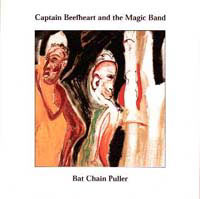
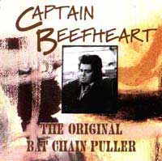

Здесь представлена информация о тех студийных
работах MAGIC BAND, что не были выпущены в свет вообще, либо были перезаписаны,
либо вышли под другим названием и (или) в иной комплектации. Это интересно.
Хотя бы потому, что здесь видно, насколько нелёгкими были отношения Ван Влита
с шоу-бизнесом, кое с кем из своих друзей и, возможно, с самим собой. А также
- как порой обилие идей "раннего" Бифхарта помогало Бифхарту "позднему"
(и как своеобразно он эти идеи перерабатывал - но это уже при прослушивании).
Прошу прощения за имеющиеся кое-где "непонятности".
Прояснить их пока не представляется возможным...
Mirror Man [Brown Wrapper] | Trout
Mask house
The Spotlight Kid | The original
Bat Chain Puller
The MIRROR MAN [BROWN WRAPPER] sessions
Был запланирован двойной альбом под названием "IT COMES TO YOU IN A PLAIN BROWN WRAPPER". Причём, в первый диск должны были войти сделанные в студии, но "живые" записи ("live in the studio"), т.е. без всяких наложений и проч. Альбом по каким-то причинам выпущен не был, но часть материала вышла позднее на пластинке "MIRROR MAN" (отсюда одно из наименований этой работы); остальное - гораздо позже - на CD "I MAY BE HUNGRY BUT I SURE AIN'T WEIRD". С 1999 года весь материал этой сессии содержится на CD фирмы Buddah "SAFE AS MILK" (бонус-треки) и "THE MIRROR MAN SESSIONS". Почти все вещи с альбома 1968 года "STRICTLY PERSONAL" впервые были также "опробованы" здесь.
Октябрь-ноябрь 1967, TTG Studios, Allegro Sound Studios (Лос-Анджелес)
"live in the studio":
1) Tarotplane (19:00)
2) 25th Century Quaker (9:50)
3) Mirror Man (15:38)
"нормальные" студийные записи:
4) Kandy Korn (8:00)
5) Trust Us (дубль 6) (7:10)
6) Beatle Bones 'N' Smokin' Stones (3:10)
7) Moody Liz (дубль 8) (4:38)
8) Safe As Milk (дубль 12) (4:55)
9) Gimme Dat Harp Boy (3:25)
10) On Tomorrow (6:55) [инструментал]
11) Trust Us (дубль 9) (7:20)
12) Safe As Milk (дубль 5) (4:12)
13) Big Black Baby Shoes (4:49) [инструментал, рання версия "Ice Rose"]
14) Flower Pot (3:50) [инструментал]
15) Dirty Blue Gene (2:40) [инструментал, рання версия "Witch Doctor Life"]
16) Korn Ring Finger (7:23)
Автор всех композиций - Дон Ван Влит
Дон Ван Влит - вокал, губная гармоника, волынка, шинай
Алекс Снуффер - гитара
Джефф Коттон - гитара
Джерри Хэндли - бас-гитара
Джон Френч - ударные
Продюсер: Боб Краснов
Выпуск:
(1-4): "MIRROR MAN" (1971)
(5-15): "I MAY BE HUNGRY BUT I SURE AIN'T
WEIRD" (1992)
(10-16): "SAFE AS MILK" (1999) (в виде
бонус-треков)
(1-9): "THE MIRROR MAN SESSIONS" (1999)
(16): "GROW FINS RARITIES" (1999)
В перезаписанном виде:
(3 - как "Son Of Mirror Man - Mere Man"), (4),
(5/11), (6), (8/12), (9) и (10 - как песня):
(13 - как "Ice Rose"): "SHINY
BEAST (BAT CHAIN PULLER)" (1978)
(15 - как "Witch Doctor Life"): "ICE
CREAM FOR CROW" (1982)
Первая версия "TROUT MASK REPLICA". Фрэнк Заппа - продюсер - хотел сделать альбом как некую "запись среды человеческого обитания" ("anthropological field recording"). Поэтому музыканты играли и записывались прямо в доме на Энсенада Драйв, где они жили в то время. В конце концов Бифхарт потребовал нормальную студию, где и был сделан окончательный вариант альбома. От первого "захода" остались следующие записи:
Январь или февраль 1969, Энсенада Драйв, Вудланд Хиллс,
Лос-Анджелес:
1) Candy man (? - блюз 20-х годов; известен в исполнении
"Миссисипи" Джона Хёрта (Mississippi John Hurt)) (0:56)
2) China Pig (4:14) *
3) "Overdub" ("We'll overdub it 3 times")(?)
(5:26)
Март 1969, Энсенада Драйв, Вудланд Хиллс, Лос-Анджелес:
4) Hobo Chang Ba, Dachau Blues - наигрывание (4:59)
5) "Bush recording" - "запись в кустах" (8:18)
6) Hair Pie: Bake 1 (5:04) *
7) Hair Pie: Bake 2 (2:44)
8) "noodling" [т.е. проигрыши, импровизация] (1:04)
9) Hobo Chang Ba (дубль 1) (2:02)
10) Hobo (упражнения) (1:57)
11) Hobo Chang Ba (дубль 2) (3:08)
12) Dachau Blues (2:06)
13) Old Fart At Play (1:23)
14) "noodling" (1:01)
15) Pachuco Cadaver (4:08)
16) Sugar 'N' Spikes (2:40)
17) "noodling" (1:00)
18) Sweet Sweet Bulbs (2:30)
19) Frownland (дубль 1) (2:51)
20) Frownland (дубль 2) (1:52)
21) "noodling" (1:10)
22) Ella Guru (2:33)
(тишина)(?) (0:08)
23) She's Too Much For My Mirror (1:30)
24) "noodling" (0:35)
25) Steal Softly Thru Snow (2:22)
26) "noodling" (1:51 )
27) My Human Gets Me Blues (2:53)
28) "noodling" (1:05)
29) When Big Joan Sets Up (4:32)
(тишина)(?) (0:04)
30) The Blimp (2:05) *
31) "Blimp playback" - воспроизведение(?) (5:09)
32) "Herb Alpert" (1:06)
33) "Septic Tank" (0:51)
34) The Dust Blows Forward 'n The Dust Blows Back (1:53) *
35) Well (2:08) *
36) Orange Claw Hammer (3:35) *
Автор всех композиций (кроме 1) - Дон Ван Влит
Дон Ван Влит - вокал, бас-кларнет, саксофоны, волынка, симран
Даг Мун - гитара (1-3)
Билл Хаклроуд - гитары, флейта
Джефф Коттон - гитара, рожок, вокал
Марк Бостон - бас-гитара
Джон Френч - ударные
Виктор Хэйден - бас-кларнет, вокал (?)
Продюсер: Фрэнк Заппа (кроме 1-3)
Звук: Дик Кунс (кроме 1-3)
Выпуск:
(2), (6, сод. фрагмент 5), (30), (34-36)
(отмеченные звёздочкой (*)): "TROUT MASK REPLICA"
(1969)
(1-29), (31-33) (несколько в ином порядке): "GROW
FINS RARITIES" (1999)
В перезаписанном виде:
(7), (9/11), (12), (13), (15), (16),
(18), (19/20), (22), (25), (27), (29):
"TROUT MASK REPLICA" (1969)
По словам Бифхарта, в процессе долгой работы над альбомом "THE SPOTLIGHT KID" было записано 35 песен (в саму пластинку вошли только 10 вещей). Похоже, это не так уж далеко от истины. Кроме(!) материала, выпущенного на альбоме, было записано следущее:
Май-октябрь 1971, The Record Plant (или(и) Amigo Studios)
инструменталы (без Ван Влита):
1) I'm Gonna Booglarize You Baby (5.46) [джем]
(дубль 1) (4.13)
(дубль 2) (1.23)
2) Pompadour [джем; возможно, из него "выросли" "Suction
Prints", "Grow Fins", "Flaming Autograph"]
(дубль 1) (4.33)
(дубль 2) (8.41)
(дубль 3) (0.44)
(дубль 4) (0.37)
(дубль 5) (4.22)
(дубль 6) (0.52)
(дубль 7) (5.39)
"законченные треки":
3) Funeral Hill (Don't Get Chicken Blues) (версия 1) (5.50)
["дикая версия"]
4) Drink Paint Run Run (7.21) [ранняя версия "Run Paint
Run Run"]
5) Seam Crooked Sam (Can't Do This Unless I Do That) (версия
1) (2.14)
6) Dirty Blue Gene (версия 1) (2.50) ["блюзовая
версия"]
7) Kiss Me My Love (Two Rips In A Haystack или Two Lips In
A Haystack) (2.33)
8) Alice In Blunderland (3.51) [инструментал]
9) Clear Spot (4.47) [инструментал]
10) Low Yo Yo Stuff (2.05) [инструментал, "медленная версия"]
11) Seam Crooked Sam (Can't Do This Unless I Do That) (версия 2) (2.14)
["меньше гармоники"]
12) Funeral Hill (Don't Get Chicken Blues) (версия 2) (3.19) ["меньше
гармоники"]
"незаконченные треки (инструментальные(?) наброски)":
13) Semi-Multicoloured Caucasian (4.24)
14) Dual & Abdul (2.50)
15) Open Pins (5.53)
16) Ballerino (2.21) [инструментал, ранняя версия "A Carrot Is As Close
As A Rabbits Gets To A Diamond"]
17) Best Batch Yet (версия 1) (3.41)
(дубль 1) (2.22) ["без
маримбы"]
(дубль 2) (0.37)
(дубль 3) (0.33)
18) Suzy Murder Wrist ("инструментал 3") (3.42)
19) Obenso Cinco ("инструментал 4") (2.46)
20) The Witch Doctor Life ("инструментал 5") (3.47)
21) Little Scratch (Natural Charm) (версия 1) (4.44) [ранняя версия
"The Past Sure Is Tense"]
22) Flaming Autograph (4.40)
(другая версия 1) (2.45)
(другая версия 2) (3.51)
23) Love Grip ("инструментал 6") (4.50)
24) No Flower Shall Grow ("инструментал 7") (5.45) [джем
на фрагмент "Petrified Forest"]
25) Best Batch Yet (версия 2) (2.22) ["без маримбы"]
26) Your Love Brought Me To Life ("инструментал 8") (4.11)
(дубль 1) (2.23)
(дубль 2) (1.31)
27) That Little Girl ("инструментал 9") (5.12)
28) Campfires ("инструментал 1") (5.46)
"акустический блюзовый джем" (Ван Влит и Эллиот Ингбер):
29) Sun Zoom Spark (версия 1) (8.27)
30) Scratch My Back (1.31)
31) "поппури" (7.16):
Down In The Bottom (Хаулин Вулф,
1961)
Key To The Highway (Биг Билл Брунзи,
1941)
Grandpa Don't Love Grandma No More
(?)
32) Sun Zoom Spark (версия 2) (8.36)
Дон Ван Влит - вокал, губная гармоника
Билл Хаклроуд - гитары
Марк Бостон - бас-гитара
Джон Френч - ударные
Арт Трипп III - маримба, фортепиано, маракасы
Эллиот Ингбер - гитара
Выпуск:
(12): "MIRROR MAN" (1990 Repertoire Records, Германия)
В перезаписанном виде:
(1), (8): "THE SPOTLIGHT KID"
(1972)
(9), (10), (29/32): "CLEAR
SPOT" (1972)
(4 - как "Run Paint Run Run"), (6), (16
- как "A Carrot Is As Close As A Rabbits Gets To A Diamond"),
(17/25): "DOC AT THE RADAR STATION"
(1980)
(13), (20), (21 - как "The Past Sure Is Tense"):
"ICE CREAM FOR CROW" (1982)
(21): "MIRROR MAN" (1990 Repertoire Records, Германия);
"THE DUST BLOWS FORWARD" (1999)
The original
"BAT CHAIN PULLER" (41.03)
[неизданный альбом]
В 1976 году "возрождённый" MAGIC BAND записал альбом, названный "BAT CHAIN PULLER". Организовывал эту работу Херб Коэн, он же - менеджер Фрэнка Заппы. Когда запись уже была завершена, Заппа подал иск на Коэна. Поводом был тот факт, что Коэн вкладывал его (Фрэнка) деньги в альбом. По решению суда Заппа стал владельцем прав на эту запись (вероятно, совладельцем - вместе с Доном), но выпускать её отказался. Бифхарт же не мог этого сделать без согласия Фрэнка. Альбом остаётся неизданным по сей день - наследники Заппы не возражают, но против теперь уже сам Ван Влит... Но запись существует и, более того, имеет хождение - как бутлег - среди поклонников. Один из последних примеров - выпуск в 2002 году диска "DUST SUCKER", содержащего "демо-версии"(?!) всех вещей с "Original BAT CHAIN PULLER".


Февраль-апрель 1976, Paramount Studios (Manor Studios?), 1) Bat Chain Puller (5.00)
2) Seam Crooked Sam (3.08)
3) Harry Irene (3.19)
4) "81" Poop Hatch (2.38) [стихи]
5) Flavour Bud Living (1.45) [инструментал]
6) Brickbats (4.23)
7) Floppy Boot Stomp (3.55)
8) A Carrot Is As Close As A Rabbit Gets To A Diamond (1.37)
[инструментал]
9) Carson City (Дон Ван Влит/Херб Берманн) (3.15)
10) Odd Jobs (5.09)
11) 1010th Day Of The Human Totem Pole (5.44)
12) Apes-Ma (0.40) [стихи]
Автор всех композиций (кроме 9) - Дон Ван Влит
Дон Ван Влит - вокал, губная гармоника, саксофоны, бас-кларнет
Джефф Морис Теппер - гитары
Денни Уолли - гитары
Джон Томас - клавишные
Джон Френч - ударные, перкуссии, гитара
Продюсеры: Дон Ван Влит и Херб Коэн(?)
Звук: Керри Макнаб
Выпуск:
(12): "SHINY BEAST (BAT CHAIN PULLER)"
(1978)
(4): "ICE CREAM FOR CROW"
(1982)
(10): "GROW FINS RARITIES" (1999)
В перезаписанном (или "в другом") виде:
(1), (3), (7), (9 - как "Owed T'Alex"):
"SHINY BEAST (BAT CHAIN PULLER)" (1978)
(5), (6), (8): "DOC AT
THE RADAR STATION" (1980)
(11): "ICE CREAM FOR CROW" (1982)
(1-12): "DUST SUCKER" (2002,
бутлег) - демо-версии(?)
ПРИМЕЧАНИЯ:
1) Запись альбома в mp3 есть на сайте "Антивоенная коллекция рок-н-ролла",
за исключением "стихотворных" треков "'81' Poop Hatch" (см.
его там же на альбоме "ICE CREAM FOR CROW", 1982) и "Apes-Ma"
2) В том же 1976-м была записана демо-версия песни "Hoboism"
(Денни Уолли - акустическая гитара, Дон Ван Влит - вокал, губная гармоника).
Подобно тому, как "BAT CHAIN PULLER" называют "великим невыпущенным
альбомом", "Hoboism" - "великая невыпущенная песня".
Её mp3-версия есть на сайте
Бена Уотерса (Ben Waters), он же "Бенджамин Хоррендос"
("Benjamin Horrendous")
<"в статью1">
<альбом
на сайте "Музыка MP3">
<песня
"Hoboism" на "Benjamin Horrendous Website">
Mirror Man [Brown Wrapper] | Trout
Mask house
The Spotlight Kid | The original
Bat Chain Puller